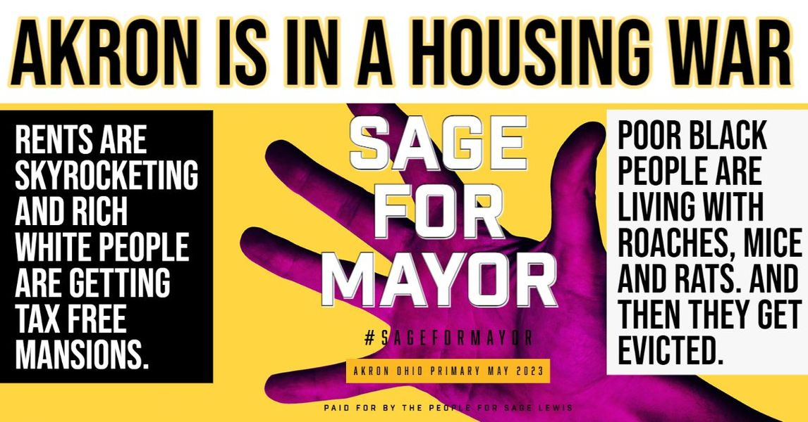

Timeline photos
The Akron Mayoral Primary Election in May 2023 is going to come down to strategy: Do you focus on rich people or do you focus on poor people?
My belief is that a chain is only as strong as its weakest link. If you want Akron to succeed you have to help the poorest of the poor succeed and then go from there. I have a bottom up strategy. They have a top down strategy.
#sageformayor